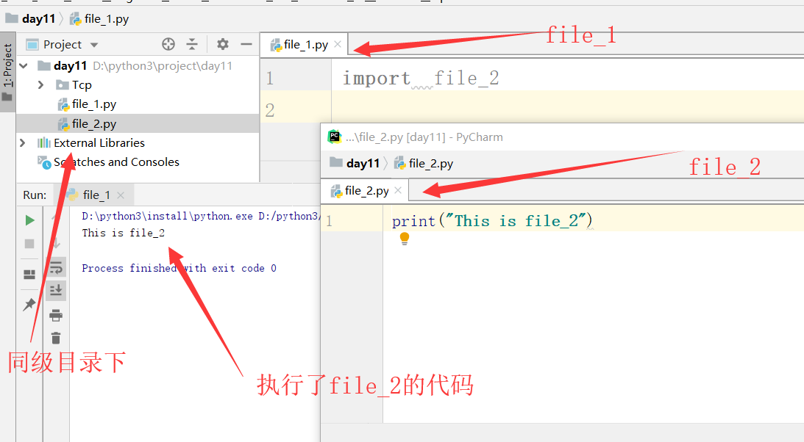
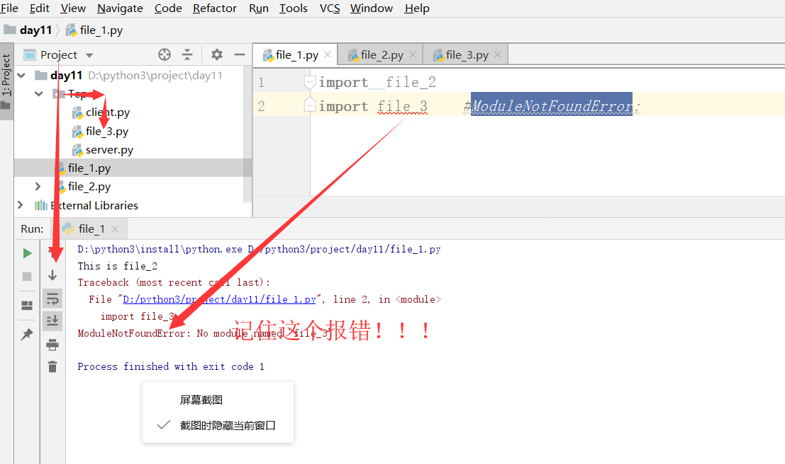
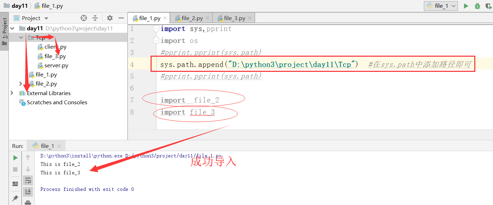

在import的过程中发生了什么？我们用一个实验来说明：

以上截图表明：在import + 模块中，直接执行了里面是语句
引申：一个模块不会被重复导入，如果要使用被导入模块的变量，要用 模块.变量名 的方式 。
如果全局空间与模块的局部空间有命名重复的变量名或函数名，则在各自对应的域内去寻找各自的对象
如下代码所示
1 ########file_2.py
2 print("This is file_2")
3
4 file_v2 = 'msy' #定义变量
5 def file_d2(): #定义函数
6 print("This is file_d2!!!")
7
8
9 ########file_1.py
10 import file_2 #导入模块
11
12
13 print(file_2.file_v2) #使用模块的变量
14 print(file_2.file_d2()) #使用模块的函数
######起别名需注意的地方
import file_2 as f
#####注意：：：起了别名以后，原来的名字在当前模块就不能使用了
拓展：按照PeP8开发规范，导入多个模块时，虽然可以一个import可以一次性导入多个模块，但不符合规范，且需按照#内置模块，#第三方模块，#自定义模块
的顺序来导入
1 ##############模块搜索路径
2
3 import sys
4 import os
5
6 base = os.path.basename(__file__) #当前文件名
7 base2 = os.path.abspath(__file__) #绝对路径
8 base3 = os.path.dirname(os.path.abspath(__file__)) #当前文件路径
9 base4 = os.path.dirname(os.path.dirname(os.path.abspath(__file__))) #当前文件上级路径
引申：除了sys.path中是内置，拓展模块外，其他模块都应使用你直接执行这个文件所在的目录作为搜索路径；
一个模块是否能被导入，就看这个模块的所在的目录在不在sys.path中，如下图演示：


常用的两种运行方式：1、cmd python xx.py 脚本的方式运行
2、导入他，import xx.py
但大多数情况我们所见到的import 时 并不会有控制台输出，但是cmd运行的时候为什么有输出呢？（pycharm 运行也是脚本运行）
或者如何达到这样的效果呢？
1 #############实现import调用时不输出代码
2 if __name__ == __main__:
3 代码块
4
5 #############################